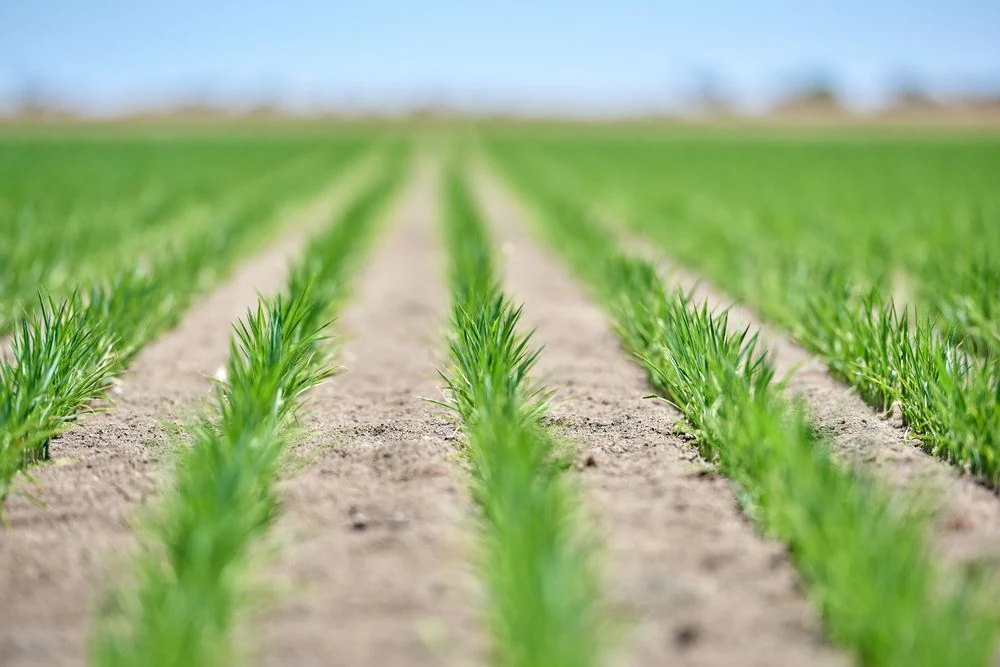

1Funding
Crop input funding through GrowRice
Eligible growers can access up to $3,000 per hectare on a case-by-case basis for inputs such as water, fertiliser and pesticides. Repayments are deducted from your 2027 crop proceeds.
$3,000per hectare, the upper limit for eligible growers.
Eligibility criteria include
- Supplied rice to SunRice in the CY24, CY25 or CY26 harvest.
- Reached at least 75% of the regional average yield for each variety grown in the years you delivered rice.
- Entered a CY27 Fixed Price Contract with SunRice or completed a GrowRice Grower Undertaking.
GrowRice funding is provided through Westpac Payments Plus. Eligible growers complete an online identity verification process before accessing funds. For Matilda contracts, funding is available for hectares retained after the Opt-Out Period.
